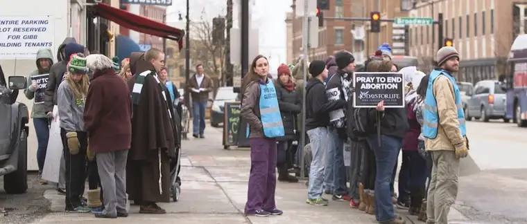

I remember the day the camera crew arrived on the sidewalk. There was an unusual energy in the air; we sidewalk prayer advocates knew we were being watched, and filmed.
It wasn’t like they were hiding it, though perhaps the motive was a bit concealed. The woman police officer took several spins around the block, with the video camera operator in the passenger seat next to her. The camera was pointing at the sidewalk. Later, she walked around, posing in different stances for the camera from a variety of spots. It was so odd to watch this going down and not know really what was happening, but that we were involved somehow.
Word on the street was that they were filming a “neutral” documentary; this is what one of the prayer advocates had been told. But why? And is that even possible? I’ve not met many who are actually neutral about the topic of abortion, if any. Even people wielding a camera.

The woman police officer seemed to be one of the main characters in this “drama.” And Fargo’s only abortion facility, the Red River Women’s Clinic, the backdrop of the segment that begins around 6:30 on this clip.
This is how the Red River Women’s Clinic describes the video on their Facebook page: “Care in Chaos, a new documentary from Rewire, examines how police…in two cities protect–or fail to facilitate–patient access to abortion care in the face of intimidation by anti-choice protestors. Vastly different approaches to policing are illustrated by two dramatically different scenes unfolding outside clinics in Charlotte, North Carolina and Fargo, North Dakota, revealing how differently police departments can interpret their role in protecting health care providers and patients depending on attitudes and geography./North Dakota holds one of the nation’s worst records for abortion access, earning among the lowest marks in a 2017 NARAL Pro-Choice America report card. Yet outside the state’s only abortion clinic, there is relative calm, due in large part to an even-handed and actively engaged approach by local police.”
“Care in Chaos.” So, there’s the gist of it. The abortion facility is going to be depicted as the care-givers, and we, the chaos-generators.
I do wonder how the abortion facility convinced our local police force — or at least one individual on it — to participate. What line did they give them to woo the force into agreeing to spare an officer of her regular duties to pose for a camera in the vicinity of our state’s only abortion facility on abortion day, on one of the most controversial corners of our city? It seemed odd then and now.
Maybe it seems odd because we protestors have befriended many of the officers, and often feel they have our backs. While they do mostly act in a neutral manner, the way this documentary goes down, it is really hard to see the involved officer as neutral, since this really is a propaganda piece for abortion.
And as one of those “protestors” there that day, and other days, I think it’s fair to share our perspective. I’ll use words from the documentary to do so, since that seems the clearest way to go about it.
So let me just pull some lines, and expound, based on my experiences as a sidewalk advocate at this site:
Julie Zimny, clinic support staff and volunteer escort, opens, mentioning how “The entrance (to the abortion facility) is often lined with protestors.” This video happened to be filmed during the 40 Days for Life North Dakota fall campaign. So, there were more “protestors” than usual. I guess it makes for a better visual, heightening the drama, building the tension for the angle they are trying to define.
She then talks about the “protestor” who was being “very aggressive right outside of our front door…she’d been warned in the weeks prior.” Finally, she said, the facility “called an officer down.”
I remember that day. I didn’t see everything that went happened leading to the police being called, but I observed the officer’s approach of the woman, who had been standing near the door with leaflets. She didn’t seem overly aggressive to me. I have seen some show up on the sidewalk that I would not call “prayer advocates.” It’s rare, but every once in a while it happens. This didn’t seem like that kind of situation to me. But it was a time when the tension was higher, with quite a few prayer advocates and an increasing number of escorts.
Officer Jesseca White speaks next: “They were able to watch the video the clinic has with their security cameras…there was some evidence of maybe overstepping maybe on the protestor’s stance,” she says. Then, giggling: “I think what happened was a counselor session between the officer and the person.”
Counseling session? I find that a strange choice of words, and also, am put off that she’s smiling about a situation that is serious. It seems telling to me. In the end, the exchange with the officer seemed peaceful; just an officer doing what he was called to do — to clarify our free-speech rights on the sidewalk, and what is allowed for body placement — and a prayer advocate taking it in, and perhaps explaining her perspective of what happened. That’s what I recall anyway.
Later, Julie says, “I don’t think there’s ever been a time where I’ve felt unsafe here at the clinic or outside on the sidewalk while I’m escorting.” Good to hear. But again, this seems a bit contrived given reality. Julie has been known to scold prayer advocates and accuse them of harassing clients, simply because they have offered them information about a baby in utero and a number call to receive life-giving resources. I’m glad she feels safe. We prayer advocates have no ill intent. But the picture she paints is a little too rosy. There is tension on the sidewalk.
But I think it’s because of the angle, this idea that the police are protecting the clinic, that she chooses these words. Yes, they are protecting the facility, but they are also there to protect us, and we have felt that protection, and the need for it, on numerous occasions as well. It’s not the abortion facility as victim, and we, the aggressors that need to be watched, though this is what is being conveyed.
It makes me question, again, why local police would oblige the facility to be such an integral part of this documentary? I respect our local police and consider them friendly toward us. But this? Again, just doesn’t match what seems right if they are truly neutral.
The video continues, as Julie describes: “Sometimes the local Christian schools will bus huge loads of children. What they will typically do is line the sidewalks so they create kind of a tunnel that patients have to walk through, and some of the escorts and I will call this the walk of shame.”
In this case, the “local Christian school” was actually a group of children from the Warsaw, N.D., area, accompanied by the Franciscan brothers led by Fr. Joseph Christensen. Warsaw is nearly two hours from Fargo, so not really what I would consider local. They went out of their way to come pray there, in other words, for the purpose of dedicating prayer during the 40 Days for Life campaign. This isn’t a usual scene, but we prayer advocates do love it when the kids come and grace our sidewalk with life!
As for lining the sidewalk to create a tunnel, well, that is what happens when there many are gathered an are keeping clear of the middle of the sidewalk. We’re not trying to block patients, but rather, are there praying for them and hoping to have a conversation if possible. In other words, the tunnel isn’t a purposeful blockade as it seems to be hinted at here, but a natural result of many people standing together in a tight area.
As for the “walk of shame,” well, that’s where the escorts have it blatantly wrong. The prayer advocates are not there to shame anyone. If that is what the women or men or escorts feel, it is a reflection of their own inner dialogue. Occasionally, someone will show up and say something most of us feel is inappropriate, and we cringe a bit. But the vast majority who come to pray do not come to shame the women. Quite the opposite. We want dignity for the women and their children. We don’t want to see them shamed later, interiorly, for, doing something deeply regretful and soul-damaging.
It’s not we prayer advocates bringing shame. The very basis on which the facility operates does this all on its own.
Officer White: “The escorts do a pretty good job of kind of barricading and making kind of a human wall that the patients can get into the clinic.”
“…do a pretty good job…” It’s like she is praising the escorts’ efforts here, which makes it seem that Officer White isn’t all that neutral. This is clearly a slanted piece, with one-sided players. The facility workers and escorts being involved is a given. But again, why the police officer joining forces with them?
She then says, “Every time I’m walking downtown…I try to swing in and see if there’s anything unusual…” Except I had never seen this police officer on the sidewalk until that particular day. Maybe she just comes when I’m not there, but this statement seems a bit suspect, sounding as if the facility is frequently patrolled, and that she has been a main “protector,” but if that were so, you’d think we’d see her most Wednesdays. Not the case at all.
Julie then talks about how “The protestors try to manipulate patients by telling them things like, ‘Oh, Mother’s Day is in in 9 months, you could be celebrating Mother’s Day.’ They really use that manipulation as a tactic.” Certainly, there is no “script” to tell us what to say. I do recall hearing someone say something to that effect, and I don’t think it’s the best approach. But I also don’t believe it was done with the intent to manipulate. Rather, it was likely said with the hope the woman might recognize the reality of what she is about to do before it’s too late. There’s not much time to say anything at all, so sometimes, the language is pretty direct, but almost always, it’s said out of love, not manipulation.
Officer White then talks about how, as long as she’s present on or near the sidewalk, “Nobody will do anything when I’m there.” The implication being that as long as she’s visible, we all behave ourselves. But this doesn’t ring true to what I have experienced there. There aren’t usually police officers patrolling the place, unless there are unusual circumstances, or someone calls in. Yes, they do keep an eye on things, but it’s not a very pronounced presence by any means, and we prayer advocates feel just as protected from seeing a patrol car go by. The police station is just around the block from here and downtown is likely a main area of concern for them anyway, so, of course they would be driving by. But we really don’t see them walking by often to check on things.
Again, the facility is portraying itself as the victim. Remember what they do there on Wednesdays, and then think about who is the real victim. It’s not us prayer advocates. It’s the women who are wounded, and the children who die.
She then says that sometimes she’ll stand across the street (I’ve never seen her there except on the day this was filmed), and maybe even hide out in one of the nearby businesses and watch us. (Well now we know!) Since no one has ever gotten arrested following one of her covert sessions, I guess we are doing a pretty good job of behaving ourselves.
And then she remarks, rather oddly: “A lot of time it’s protestors calling in the other protestors…they’ll try to catch each other in some sort of cat and mouse game.”
I have no idea what she’s referring to here. Generally we protestors are “all in this together,” certainly not playing “some sort of cat and mouse game” with each other. The year an aggressive counter-protestor showed up and verbally harassed us may be what she’s referring to, but “a lot of the time” is a complete exaggeration, and her assessment of what is going on among us, false. Her statement here paints an erroneous picture of our relationship with one another.
Officer White then seems to portray herself as a heroine of sorts. “… I’ve been very open and very available. I can get texts, I can get phone calls from them.” While I’m glad our police officers have our backs, they should have ALL of our backs, and not give the impression they are protecting the facility more than those praying in front of it. Maybe Officer White would be willing to allow us to text her, too, when we’re being harassed?
“They’ve gotten bomb threats, they’ve gotten all those kinds of threats before and we document them,” she continues, adding, “Nothing serious has happened, but that doesn’t mean something can’t happen tomorrow.” Something serious can always happen, true, but…this sort of makes it seem very positively likely. Yet, “Nothing serious has happened.” Is that because of police protection? Or, could it be we prayer advocates are really not “crazies” and do have the best interests of the clients in mind? I don’t know the source of these bomb threats, but they could come from virtually anywhere in the country, from anyone.
Later, Officer White talks about the gentleman with the sign that was not legal, and how he corrected it after she explained to him what was needed. Later, she saw that he’d complied, and gave him a thumbs up. But then has second thoughts about that gesture. “I really hope someone didn’t get a picture of me giving him a thumbs up, with his abortion sign…just because of that whole neutral stance that I as a government official have to take,” she says.
So sad that police officers can’t even be nice anymore without being worried someone will take it wrong.
In sum, I think if the pro-choice company who had filmed this had been truly fair, open and honest, they would have included some comments from the prayer advocates, and brought our side into it.
This film is, in other words, “fake news,” in the sense that it’s not the fullest truth of what happens on Wednesdays in downtown Fargo. It makes the abortion facility employees and volunteers appear as saviors or heroes. But as my friend from another state far away who watched it commented, they end up making themselves look badly.
Finally, answer me this please: why would a documentary like this be needed in the first place if what was happening inside that building were truly valiant?
I’ll leave it here for now. As one of the prayer advocates, a mother of three little ones, said recently as she left her spot on the sidewalk for the day, “Save the Humans!” Yes, let’s keep trying. Those little souls are totally worth it, and the lives and health of the mothers, too.